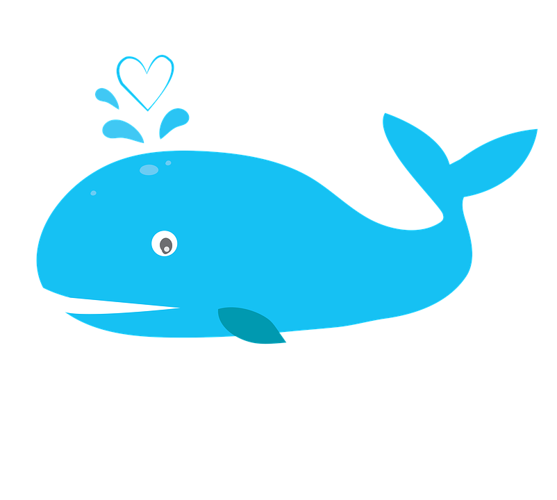

Balina
Geri

Tarayıcınız audio elementini desteklemiyor.
İsim:
Balinagiller,sürüler halinde çoğunlukla soğuk okyanuslarda yaşar.
Hayvan Özellikleri:
30 metre boyunda, 200 ton ağırlıkta olanları vardır. Suda yaşayan sıcak kanlı memelilerdir. Yavrularını doğurur ve sütle beslerler. Ömrü: 70-90 yıl.
Balina